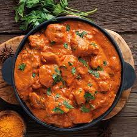

Butter Chicken

Description
Butter chicken, traditionally known as murgh makhani, is an Indian dish originating in India.
Ingredients
For the marinade:
- Raw Chicken
- 2 tsp Red Chilli Powder
- 2 tsp Ginger-Garlic Paste
- 2 tsp Salt
- 2 tsp Lemon Juice
- 1/2 cup Curd
- 1/2 tsp Garam Masala1
- 1 tsp Kasuri Methi
- 2 tsp Mustard Oil
For gravy:
- 2 tsp Oil
- 2 to taste Butter Cubes
- 3 gram Cloves1 Cinnamon Stick
- sliced1 tsp Mace
- 7 Cardamom
- 4 Tomatoes, chopped
- 1 tsp Garlic
- 1 tsp Ginger
- 1 tsp Ginger-Garlic Paste1
- 1/2 tsp Red Chilli Powder
- 1 tsp Kasuri Methi
- 2tsp Honey
- 1 Green Chilli
- 2 tsp Cardamom Powder
1 tbsp Cream
Steps
For Marination
- In a mixing bowl, put raw chicken pieces and add salt, red chilli powder, ginger garlic paste and lemon juice. Mix well.
- Refrigerate for about 15-20 minutes.
- Now add curd to the refrigerated mix. Followed by salt, ginger garlic paste, red chilli powder, garam masala, kasuri methi and mustard oil. Mix well and refrigerate again for an hour.
- Roast the marinated chicken in an oven for about 30 minutes until it is three-fourth done.
Prepare the chicken gravy
- Heat 2 tsp of oil in a pan with butter.
- Add cloves, cinnamon stick, mace and cardamom. Saute and then add chopped tomatoes, garlic and ginger. Mix well and then grind well.
- In another pan, heat another two cubes of butter, along with ginger garlic paste.
- Add the tomato puree made from the mixture. Now add red chilli powder, kasuri methi, honey and finally the roasted chicken pieces. Let it simmer.
- Add green chilli, cardamom powder and cream. Mix well.
- Serve with a teaspoon of cream over.